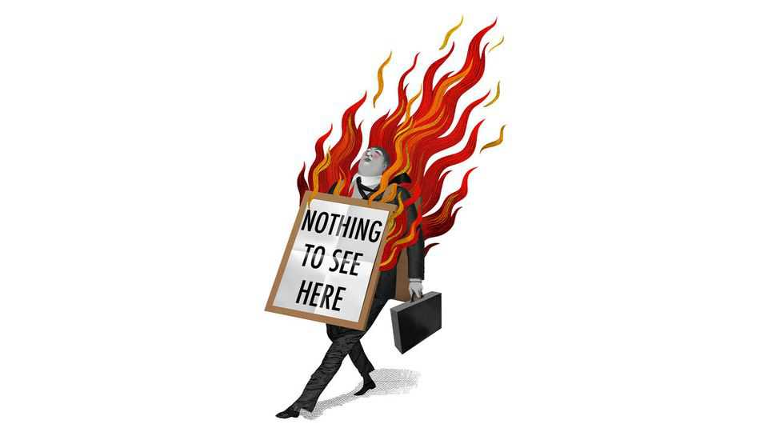

There has never been a scandal like the Jensen Huang affair
A journey through the annals of corporate crises

Nov 12th 2026
Editor’s note (November 12th 2026): This article has been updated to take account of Jensen Huang’s resignation.
In the gossip columns it is the story of a steamy affair between an American billionaire who wears a leather jacket and a younger woman who allegedly works for Chinese intelligence. On Wall Street it illustrates a three-fold concentration risk: the danger of a stock market which depends on one technology, which depends on one firm, which depends on one man. In Washington they talk of a rotten Commerce Department, the closeness of President Donald Trump to tech bosses, and divisions in the Republican Party over China. “Two clichés make us laugh. A hundred clichés move us,” wrote Umberto Eco of the film “Casablanca”. And so it is with the Jensen Huang affair: not one scandal, but many.
The annals of corporate crisis contain nothing like it. Chief executives frequently face trouble in the boardroom over something that has happened in the bedroom. Every few years some more serious crisis fundamentally changes how the world views an important firm. These things do not happen simultaneously. John Browne was the oil industry’s “sun king”. In 2007 the BP boss resigned after telling a “white lie” in court about a relationship: a mark on the man, but not so much his firm. Conversely, there was not one individual to blame for, and nothing titillating about, BP’s oil spill in the Gulf of Mexico three years later. Rupert Murdoch’s media empire has been shaped by his five marriages and four divorces. But Wendi Deng, his wife at the time, never hacked phones for the News of the World.
After the crisis comes the crisis response. This means a press release which attempts to maximise contrition and minimise legal risk. Mr Huang sent an all-staff email which mixed the panicked clichés of the disloyal husband (“cannot undo what I have done”) with those of the disgraced leader (“privilege of my life”). In all communications, the word “independent” must be used as frequently and liberally as possible: Nvidia’s “independent directors” tasked “independent counsel” to do an “independent investigation”. Sides are quickly chosen. Mr Trump jumped to Mr Huang’s defence. “He’s got to stay in that seat, at all costs” said one presenter of “All-In”, a bro-ish tech podcast, going all-in to defend Mr Huang and protect the stock market.
Bad news often begets more bad news. Reports then emerged that Mr Huang may also have slept with a subordinate and on November 12th Nvidia announced that Mr Huang had resigned from the firm. He went quicker than most. Volkswagen’s boss resigned within a week after its emissions-rigging scandal in 2015. The boss of Wells Fargo lasted a month after the bank was fined for opening thousands of fake accounts in 2016. Boeing’s boss stuck around for a year after a 737 MAX crashed in 2018.
The worst crises linger. Boeing’s next boss was felled by the same issue. The very worst become lengthy trials. In the early 2000s Roland Dumas, a French government minister, was tried (and eventually acquitted) over his girlfriend’s lobbying for a state-owned oil firm. Some end up immortalised in salacious books. The same girlfriend recounted the affair in a tell-all entitled “The Whore of the Republic”.
Mr Huang’s Chinese affair could go down as the most expensive shag in history. Nvidia is worth perhaps $500bn less than it was at the end of last week, which ranks this among the most costly corporate crises of all time. (The sum is greater still when you consider that the rest of the market is up.) The ultimate financial cost depends on two hard questions. How much was the influence wielded by Mr Huang in the White House actually worth? And can Colette Kress, the chief financial officer who Nvidia’s board said will run the company until a permanent successor is found, maintain the carefully balanced financial deals that Mr Huang assembled? Both matter not only for the chipmaker’s shareholders, but all of Silicon Valley. Mr Huang was the industry’s most vocal lobbyist and its keenest financial backer.
The worst scandals are obvious in hindsight. Researchers drew attention to Volkswagen’s dodgy emissions figures a year before it was sued by the American government over “dieselgate”. A report by a short-seller on Mr Huang’s dealings with his mistress, Alice Huang, was published in May. That she might be a Chinese agent would have been obvious to Mr Huang had he inquired about her background: before going into business, Ms Huang worked at a Chinese state-run broadcaster known by its unimprovable acronym, “CCTV”. Mr Huang’s lack of inquisitiveness is bested only by that of Neil Bush, son of one American president and brother of another. When travelling in Asia during the 1990s, women would show up uninvited to his hotel room and have sex with him. “It was very unusual,” Mr Bush said later during his divorce proceedings.
A great scandal is like a sponge, soaking up everything around it. The Huang affair is likely to become the focus of corruption inquiries by Democrats in Washington. How might it have been prevented? Investment restrictions have been adopted in recent years to prevent the Chinese from acquiring secrets by buying companies. But there are no good rules to stop them sleeping with executives. Never has the stock market depended on so few people so unaccustomed to being playboys.
The best precedent for the Huang affair has nothing to do with Silicon Valley, and it exploded all the way back in 1963, the year Mr Huang was born. John Profumo, an up-for-it British government minister with a national-security brief, had an affair with a young showgirl who was also said to be involved with Yevgeny Ivanov, a Soviet naval attaché. It mattered little that an official (indeed an “independent”) inquiry determined that no state secrets had been compromised by their relationship. Harold Macmillan, the prime minister, resigned soon after. Profumo withdrew from public life and spent the remainder of his days helping the poor of London’s East End. How will Mr Huang spend his? ■